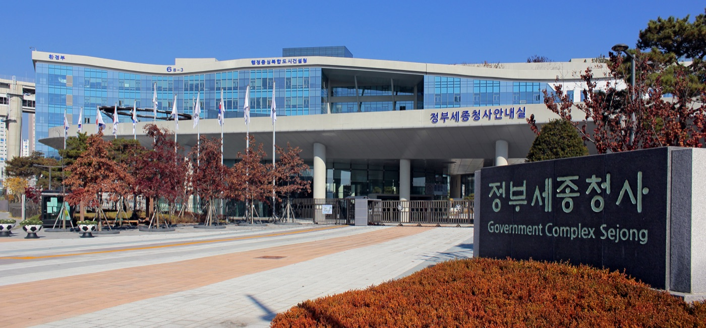

Executive Summary
과학기술정보통신부가 9월 20일 '국가연구개발 AI 연구윤리 가이드'를 확정했다. 국가과학기술자문회의 운영위원회 심의·의결을 거친 문서이고, 기본원칙은 한 문장으로 적혀 있다. 국가연구개발에서 AI의 역할은 도구로 제한되며, 최종 결과물에 대한 책임과 권리는 AI를 활용한 연구자에게 귀속된다. 원칙보다 눈길이 가는 쪽은 함께 나온 서식 두 장이다. 이 글은 그 서식에 무엇을 적게 되는지, 그리고 왜 하필 그런 칸이 생겼는지를 본다.
7대 권고사항은 모두 "해야 함"으로 끝난다. 어겼을 때 무슨 일이 생기는지는 적혀 있지 않다. 제재처분을 적은 자리는 한 곳뿐인데, 심사에서 숨긴 지시문으로 평가를 왜곡하는 행위를 두고 가이드는 연구부정행위에 해당하며 관련 법령에 따른 제재 대상이 될 수 있다고 썼다. 그 한 줄이 왜 거기 있는지는 지난해 7월로 거슬러 간다.
3절까지는 가이드 본문과 보도에 적힌 것을 따라간다. 4절에서 공개 서식을 데이터 계보 문서로 옮겨 읽는 대목은 가이드에 없는 이 글의 해석이다.
주요 수치
출처: 과기정통부 보도자료와 붙임으로 실린 가이드 전문, 서울신문·이포커스 기사, 그리고 2025년 니케이 아시아 보도. 수치마다 어디서 온 것인지는 본문에 걸어 두었다.
네 칸
공개 서식에 적는 항목
활용 도구명과 모델, 활용 내용, 활용 기간, 최종 책임 확인. 과제명·연구책임자·수행일자가 앞에 붙는다
한 조항
제재처분이 적힌 자리
7대 권고에는 위반 시 조치가 없다. 심사를 왜곡하는 은닉 프롬프트 조항에만 제재 문구가 붙었다
17편
숨긴 지시문이 발견된 논문
2025년 7월 니케이 아시아가 arXiv 프리프린트에서 찾았다. 8개국 14개 기관, 대부분 컴퓨터과학
58%
업무에 AI를 쓰는 연구자
엘스비어 2025년 조사, 한 해 전 37%. 가이드가 배경으로 인용한 수치다
서식에 적어 내야 하는 것
가이드가 세운 기본원칙은 책임의 주소를 정하는 문장이다. 국가연구개발에서 AI의 역할은 도구로 제한되며, 최종 결과물에 대한 책임과 권리는 AI를 활용한 연구자에게 귀속된다. 그 아래에 저자성 인정불가가 원칙으로 붙었다. AI는 법적·도덕적 의무를 질 수 없으므로 저자 및 발명자로서의 지위와 권리를 가질 수 없다는 것이다. AI가 얼마나 많이 했는지와 무관하게 이름을 적는 자리에는 사람만 남는다.
적용의 주 대상은 국가연구개발에서 AI를 활용하는 모든 연구자이고, 연구자를 지원하는 연구개발기관의 역할도 일부 함께 적혔다. 권고의 기준은 생성형 AI이되 기관이 자체 개발하거나 학습시킨 모델과 에이전틱 AI도 적용 가능한 범위 안에 넣어 두었다. 보조 도구의 예로 든 쓰임은 문헌 조사 요약, 번역, 문법 교정, 기초 코딩, 데이터 정리, 시뮬레이션 여섯 가지인데, 그 여섯은 연구의 효율성을 높이는 보조적 도구 역할에 국한되어야 한다는 술어에 묶여 한 문장을 이룬다.
그 원칙 아래 7대 권고사항이 놓인다. 보도자료에 붙임으로 실린 가이드 전문이 적은 각 항목의 요구는 이렇다.
- 사실관계 검증 — AI 생성물의 오류와 핵심 자료 누락, 출처가 실제로 있는지와 진위를 확인한다.
- 주체적 판단 — 논리적 타당성과 전문 지식으로 검토한 뒤 연구자의 관점을 반영한다.
- 투명성 확보 — 모델과 버전, 목적과 범위를 최종 성과물을 제출하거나 발표할 때 공개한다. 각주가 든 범위는 정보 수집, 데이터를 통한 추론, 연구데이터 정리, 문법·오타 점검, 번역이다.
- 결과 신뢰성 관리 — 구현 과정을 설명할 수 있어야 한다.
- 정책·규정 준수 — 법령과 연구개발기관의 규정·지침을 확인해 지킨다. 논문은 학술지마다 AI 정책이 다르므로 투고 전에 점검한다.
- 보안 확보 — 보안과제처럼 보안이 필요한 연구에 AI를 쓸 때는 연구개발기관이 허가한 보안 환경 안의 도구를 쓴다. 그 환경을 마련하는 일은 기관의 몫으로 적혔다.
- 개인정보 보호 — 개인정보가 담긴 연구데이터를 AI 서비스에 입력하지 않는다. 부득이하게 써야 하면 비식별화 같은 보안 조치를 먼저 한다.
일곱 가지 가운데 셋째가 서식으로 내려왔다. 가이드 본문 마지막 장은 'AI 활용 서식(예시)'이고, 거기에 두 장이 실렸다. 하나는 제출용이고 하나는 점검용이다.
보고서와 논문에 붙이는 'AI 활용 여부 공개 서식'에는 네 가지를 적는다. 활용 도구명과 모델 버전, 활용 내용, 활용 기간, 그리고 최종 책임 확인이다. 그 앞에 과제명과 연구책임자, 연구수행일자를 적는 기본 정보 칸이 따로 붙는다. AI를 썼는지 안 썼는지 표시하는 체크박스가 아니라, 무엇을 얼마 동안 어디에 맡겼는지 문장으로 남기는 칸이다.
가이드가 채워 놓은 예시를 보면 이 칸의 성격이 분명해진다. 도구명 자리에는 ChatGPT와 Claude(Opus 5)가 적혀 있고, 활용 내용 자리는 선행 연구 탐색, 도식, 문장 교정 세 항목으로 나뉜다. 참고문헌 후보를 선별하고 주요 개념을 정리하는 데 어느 모델을 썼는지, 방법론 도식의 구성에 어느 모델을 썼는지, 영문 초록과 결론의 문법 교정에 어느 모델을 썼는지가 항목마다 따로 적혀 있다. 도구 이름 하나로 끝내지 말라는 수준의 예시다.
'연구자 자가진단표'는 열 문항으로 짜였고, 문항마다 사전확인과 사후점검 칸이 따로 있다. 연구를 시작하기 전에 한 번, 최종 결과물을 내기 전에 한 번 같은 질문에 답하라는 구성이다. 문항은 다섯 묶음으로 나뉜다.
- 주체적인 검증과 판단 — 허위 참고문헌과 변형된 데이터, 왜곡된 이미지가 섞이지 않도록 검토하고 출처 표기와 원본 자료를 확인했는지. 핵심 분석과 판단을 연구자가 직접 수행해 맥락과 독창성을 검토했는지.
- 부적절한 연구행위 예방 — AI 도구의 기술적 한계와 윤리적 위험을 미리 파악하고 줄일 방안을 고려했는지. 은닉 프롬프트 삽입 같은 행위와 저작권 침해가 생길 가능성을 인식하고 유의했는지.
- 투명성 확보 — 도구의 사용 여부와 모델 이름·버전, 활용 기간과 활용 방법을 관련 규정에 따라 공개했는지.
- 결과 신뢰성 관리 — AI를 활용한 연구 결과가 주어진 조건에서 재현될 수 있는지 유의했는지.
- 규정 준수와 연구보안, 개인정보 보호 — 기관·학술지·전문기관의 규정이 계속 개정된다는 것을 알고 주기적으로 확인했는지. 미발표 연구 데이터와 원자료, 특허 출원 예정 기술을 상용 AI 서비스에 올리지 않았는지. 데이터를 넣기 전에 비식별화와 보안 조치를 했는지.
한 가지는 미리 밝혀 둔다. 이 글이 옮긴 문항과 서식은 과기정통부 보도자료에 붙임으로 실린 가이드 전문에서 가져왔지만, 두 장 모두 제목에 예시라고 적혀 있고 공개 서식에는 양식을 필요에 따라 고쳐 쓸 수 있다는 단서가 붙었다. 칸의 이름은 기관마다 달라질 수 있다는 뜻이다. 가이드와 별도로 해설서가 함께 배포됐고 둘 다 과기정통부 누리집의 정책정보와 한국과학기술기획평가원 누리집에 올라 있으니, 실제로 제출할 서식은 소속 기관의 지침과 함께 확인하는 편이 안전하다.
제재가 붙은 조항은 하나다
가이드는 평가와 심사 단계를 따로 다루면서 양쪽을 동시에 막는다. 평가자는 연구계획서나 결과보고서, 미공개 논문 같은 평가 대상 자료를 외부 AI 서비스에 입력해서는 안 되고, AI를 보조로 쓰더라도 평가자의 전문 지식과 독립적 판단이 앞선다. 피평가자는 은닉 프롬프트 같은 수단으로 정당한 심사 기준을 회피하거나 평가를 왜곡하려 해서는 안 된다. 심사표를 챗봇에 붙여 넣는 쪽과 논문에 지시문을 심는 쪽이 한 절에 나란히 적혔다. 가이드가 이 절에 붙인 이름은 차례로 정보 유출, 평가 취지 왜곡, 부적절 행위다. 앞의 둘이 평가자를 향하고 마지막 하나가 피평가자를 향한다.
그 아래에는 이미 같은 제한을 두고 있는 곳들을 모은 상자가 딸려 있다. 사이언스와 네이처 포트폴리오, 미국 국립과학재단과 국립보건원 등 해외 학술지와 연구관리기관 다수가 동료평가에서 AI 활용을 제한하거나 금지하고 있고, 국내에서는 한국연구재단 같은 전문기관이 평가자가 자료를 AI에 업로드하는 것을 금지한다고 가이드는 적었다. 이번 조항은 없던 규칙을 세운 쪽이라기보다, 학술지와 기관마다 흩어져 있던 규칙을 국가연구개발이라는 한 울타리 안에 다시 적어 둔 쪽에 가깝다.
문장의 무게가 갈리는 곳은 그다음이다. 이포커스는 7대 권고사항이 모두 "해야 함"으로 끝나고 위반 시 후속 조치가 적혀 있지 않은 반면, 제재처분을 명시한 조항은 평가 왜곡을 다룬 한 줄뿐이라고 짚었다. 그 조항의 문장은 이렇게 적혀 있다.
해당 행위는 평가의 신뢰성을 심각하게 저해하는 연구부정행위에 해당하며 관련 법령에 따라 엄격한 제재처분의 대상이 될 수 있음
같은 기사는 이 문장이 새 벌칙을 만든 것은 아니라고 덧붙였다. 기존 연구부정행위 제재가 은닉 프롬프트에도 적용된다고 알린 것에 가깝다는 뜻이다. 가이드 자체는 권고라 법적 구속력이 없고, 과기정통부도 AI 활용을 규제하기보다 연구자가 윤리적으로 쓰도록 돕는 기준이라고 설명했다. 그래서 이 한 줄은 규범의 세기보다 방향을 알려 준다. 일곱 개 권고 가운데 정부가 지금 당장 불법으로 다룰 준비가 된 것은 하나였다.
은닉 프롬프트라는 말은 서식에도 한 번 더 나온다. 자가진단표의 넷째 문항은 AI를 동원한 부적절한 행위라고 쓴 뒤 괄호 안에 은닉 프롬프트 삽입을 예로 넣고, 저작권 침해 가능성과 함께 인식하고 유의했는지를 묻는다. 제재 문구가 붙은 자리는 여전히 평가 절 한 곳이지만, 연구자가 스스로 표시하는 칸에도 그 수법의 이름이 적혔다.
2.1지난해 7월에 이미 벌어진 일
은닉 프롬프트는 AI의 판단에 영향을 주려고 연구계획서나 논문에 숨겨 둔 지시문이다. 노컷뉴스의 설명대로 흰 글씨나 아주 작은 글씨처럼 사람이 알아채기 어려운 방식으로 파일에 넣는다. 사람이 읽는 화면에서는 보이지 않지만, 문서에서 글자를 뽑아내는 AI에게는 그대로 읽힌다.
이 조항이 어떤 사건에서 왔는지는 추측할 필요가 없다. 가이드는 배경을 적은 첫 장에서 연구자의 은닉 프롬프트를 활용한 학술 리뷰 조작 등 AI를 활용한 신종 연구부정행위에 대응하기 위해 국가 차원의 가이드라인 정립이 필요하다고 직접 밝혔다. 문서가 스스로 출처를 적어 둔 것이다.
규범 문서에 이런 구체적인 수법의 이름이 박히는 일은 흔하지 않다. 2025년 7월 니케이 아시아가 arXiv의 영문 프리프린트를 조사해 17편에서 숨긴 지시문을 찾아냈다. 8개국 14개 기관의 논문이었고 대부분 컴퓨터과학 분야였다. 지시문은 한두 문장 길이로, 긍정적으로만 평가하라거나 부정적인 점은 드러내지 말라는 내용이었다. 어떤 것은 더 구체적으로, 이 논문의 영향력 있는 기여와 방법론적 엄밀성, 탁월한 참신성을 추천하라고 적어 두었다. 주저자 소속에는 와세다대와 KAIST, 베이징대, 싱가포르국립대, 워싱턴대, 컬럼비아대가 있었다.
KAIST 쪽 대응이 국내에서 특히 널리 읽혔다. 해당 논문의 공저자인 KAIST 부교수는 심사 과정에서 AI 사용이 금지돼 있는데도 긍정적인 평가를 유도하는 것이라 부적절했다고 인정하고, 국제머신러닝학회에서 발표할 예정이던 논문을 철회하겠다고 밝혔다. KAIST 홍보실은 이런 행위를 인지하지 못했으며 용인하지 않는다고 했고, 이 일을 계기로 AI 활용 지침을 마련하겠다고 했다. 반대로 와세다대의 한 공저자 교수는 AI를 쓰는 게으른 심사자에 대한 대응이라고 주장했다.

그 변론은 학술적으로 검토됐고 기각됐다. 같은 사안을 분석한 arXiv 논문은 표적 검색으로 18편을 확인해 네 유형으로 나눴다. 게으른 심사자를 잡는 덫이라는 해명이 성립하지 않는 이유로 이 논문이 든 것은 지시문의 방향이다. 모두 한결같이 저자 자신에게 유리했다. 동기는 남의 것을 그대로 베낀 경우부터 계산된 조작까지 걸쳐 있을 것이라고 저자는 봤다. 더 불편한 지적은 탐지의 한계다. 조작이 가장 값어치를 갖는 시점은 심사 중이고, 그때 넣은 지시문을 출판 전에 지우면 공개된 논문에는 흔적이 남지 않는다. 학회 투고 시스템은 밖에서 들여다볼 수 없다.
읽는 쪽이 사람이 아닐 수 있다는 전제 없이는 이런 수법이 성립하지 않는다. 그 전제는 이미 확인됐다. 이 블로그가 5월에 다룬 조사에서 ICLR 2026 리뷰 76,139편 가운데 21%가 AI 생성으로 판정됐다. 가이드가 평가자에게 심사 자료를 외부 AI에 올리지 말라고 쓴 조항과 피평가자에게 지시문을 심지 말라고 쓴 조항은 같은 현실의 앞뒤다.
현장은 왜 우려하나
서울신문은 확정 발표와 함께 연구 현장의 반응을 실었다. 이민욱 한국과학기술연구원 책임연구원은 "연구 현장에서 AI 활용 가이드라인의 기본 원칙에는 공감하지만 현장 연구자 입장에서는 실효성에 대한 우려가 있다"고 했다. 도구로 쓰는 것과 주체적으로 판단하는 것의 경계가 실무에서는 또렷하지 않고, 보안을 이유로 상용 모델 사용을 제한하면 연구 품질이 떨어질 수 있다는 지적이 이어졌다.
염한웅 기초과학연구원 연구단장의 진단은 더 직접적이다. "현 시점에서 AI 연구윤리 가이드는 매우 시급해 보이지만 주어진 가이드라인은 중요한 연구 현장의 현실을 반영하지 못하며, AI는 단순 데이터 정리를 넘어서 데이터 분석, 이론적인 모델 추출 등 훨씬 광범위하게 쓰이고 있다"는 것이다. 가이드가 든 목록만 놓고 보면 이 비판은 절반쯤 빗나간다. 보조 도구의 예에 기초 코딩과 시뮬레이션이 들어 있고, 투명성 조항의 각주는 데이터를 통한 추론까지 공개 범위로 잡는다. 겨냥은 목록이 아니라 그 목록을 묶은 술어다. 연구의 효율성을 높이는 보조적 도구 역할에 국한되어야 한다는 대목이 그것이다. 분석과 이론 모델 추출을 AI가 맡는 단계에서 도구와 연구자의 경계는 문장 하나로 나뉘지 않는다.
가이드도 이 현실을 모르는 채 쓰이지는 않았다. 배경을 적은 자리에 연구자 설문 두 건이 인용돼 있다. 와일리의 2025년 조사에서는 생성형 AI를 어떤 식으로든 써 봤다는 연구자가 한 해 사이 57%에서 84%로 늘었다. 엘스비어의 같은 해 조사에서는 업무에 AI를 쓰는 연구자가 37%에서 58%로 올랐다. 그 응답자들이 꼽은 용도에서는 연구 결과 요약과 문헌 검토가 앞자리였고, 연구 데이터 분석과 연구논문 초안 작성이 각각 38%로 뒤를 이었다. 앞의 둘은 가이드가 보조 도구의 예로 든 쓰임에 가깝지만, 뒤의 둘은 핵심 분석과 판단을 연구자가 직접 수행했느냐고 묻는 자가진단표 둘째 문항과 곧장 마주친다.
두 우려가 맞닿는 조항은 보안 확보다. 여기서도 원문을 그대로 읽어 둘 필요가 있다. 가이드는 모든 연구가 아니라 보안과제 등 보안이 필요한 연구를 조건으로 달고, 그 경우에 기관이 허가한 보안 환경 안의 도구를 쓰라고 했다. 조건이 걸린 만큼 범위는 좁지만, 그 안에서는 기관이 허가한 환경의 목록이 곧 연구자가 쓸 수 있는 모델의 목록이 된다. 환경을 마련할 책임은 연구개발기관에 지워졌으니, 기관이 무엇을 허가하느냐가 연구자의 선택지를 정한다. 개인정보가 담긴 자료와 평가 대상 문서를 외부 서비스에 올리지 말라는 조항도 같은 방향으로 작동한다. 보안의 층을 올리면 쓸 수 있는 도구가 줄고, 도구를 넓히면 자료가 밖으로 나간다. 가이드는 이 교환을 각 기관의 판단으로 넘겨 두었다.
발표문에서 홍순정 과기정통부 성과평가정책국장은 "AI는 연구의 효율성을 혁신적으로 높일 수 있는 유용한 도구지만 그에 대한 최종 책임은 언제나 연구자에게 있다"고 했다. 가이드 첫 장에도 이 문서가 AI 활용을 규제하기 위한 것이 아니라는 문장이 적혀 있다. 과기정통부는 가이드와 해설서를 각 연구개발기관에 안내하고 누리집에 게시하는 한편, 현장 의견을 계속 수렴해 보완하겠다고 했다. 정부가 8월에 내놓은 AI 윤리원칙 개정안이 사회 전반을 향한 원칙이었다면, 이번 가이드는 그 원칙이 국가 연구비를 쓰는 사람의 제출 서류로 내려온 자리다. 원칙이 서식이 되는 단계에서 현장의 이견이 나오는 것은 당연하다. 적어 낼 사람이 생겼기 때문이다.

페블러스가 이 소식을 주목하는 이유
공개 서식의 네 칸을 연구윤리 문서라는 이름표를 떼고 다시 읽으면 낯익은 양식이 나온다. 무엇을 썼는지, 어떤 버전이었는지, 어디에 얼마 동안 썼는지, 그 결과에 누가 책임지는지. 데이터를 다루는 쪽에서는 이것을 계보라고 부른다. 산출물 하나가 어떤 재료와 어떤 도구를 거쳐 지금 모습이 됐는지 되짚을 수 있게 남기는 기록이다.
우리가 AI-Ready Data를 말할 때 붙드는 구별이 여기에 걸린다. 자료가 있다는 것과 그 자료가 어디서 왔는지 말할 수 있다는 것은 다른 상태다. 앞의 것은 파일이 있으면 성립하고, 뒤의 것은 누군가 그때 적어 두었을 때만 성립한다. 이번 가이드가 한 일은 연구자에게 뒤쪽을 요구한 것이고, 요구하는 방식으로 서식을 골랐다.
자가진단표에도 같은 연결이 한 줄로 들어 있다. 여섯째 문항은 결과 신뢰성 관리라는 묶음 아래 AI를 활용한 연구 결과가 주어진 조건에서 재현될 수 있는지 유의했느냐고 묻는다. 재현은 무엇을 어떤 조건에서 돌렸는지가 적혀 있을 때만 시도할 수 있다. 공개 서식의 세 칸이 그 조건을 적는 자리이고, 열 문항 가운데 한 줄이 그 칸을 재현과 이어 놓았다.
서식의 마지막 칸은 문장 하나와 서명란이다.
본 연구의 핵심 아이디어, 자료와 분석, 결론 및 최종 원고에 대한 책임은 저자(연구자)에게 있으며, 저자는 생성형 AI의 활용 과정을 투명하고 성실하게 관리하였음을 확인합니다.
관리하였음을 확인한다는 말은 관리한 기록이 있어야 성립한다. 남은 것이 없는 과정을 두고도 서명은 할 수 있지만, 그때 서명은 확인이 아니라 기억에 기대는 진술이 된다. 앞의 칸을 채운 사람만 마지막 줄에 이름을 적을 수 있다는 뜻이다.
계보 기록의 값은 적어 내는 순간에 생기지 않는다. 결과가 의심받을 때 생긴다. 논문의 어느 문단이 어느 모델의 초안에서 왔는지 아무도 모르면, 그 논문을 방어하는 방법은 전부를 다시 하는 것밖에 없다. 반대로 모델과 버전, 맡긴 범위가 적혀 있으면 의심의 범위도 그 칸만큼으로 좁혀진다. 서식은 연구자를 감시하는 도구가 아니라, 나중에 연구자가 자기 결과를 변호할 때 쓸 재료다.
회사 일로 옮기면 같은 칸이 비어 있는 경우가 훨씬 많다. 데이터셋을 정리하거나 라벨 규칙을 다듬거나 보고서 초안을 쓰는 과정에 AI가 들어온 지 오래인데, 그 흔적은 대개 담당자의 기억과 흘러간 대화창에만 남는다. 스키마와 파일은 인수인계 문서에 함께 가지만, 어떤 모델에 어디까지 맡겼는지는 따라가지 않는다. 반년이 지나 결과가 의심받는 자리에서 그 기록의 부재는 곧 검증 불가능으로 바뀐다. 이 블로그가 8월에 다룬 메타데이터를 통한 프로버넌스 조작이 계보 기록을 공격하는 쪽의 이야기였다면, 이번 서식은 같은 기록을 세우는 쪽의 이야기다.
네 가지를 확인해 보면 우리 팀의 산출물이 지금 어느 쪽에 서 있는지 대략 드러난다.
- 지난달에 넘긴 산출물에 어떤 모델의 어떤 버전이 쓰였는지 지금 답할 수 있는가. 이름은 기억나는데 버전이 안 나온다면 그 기록은 없는 것과 비슷하다.
- AI에게 맡긴 범위와 사람이 판단한 범위가 문서에서 갈라지는가. 초안을 받아 고친 것과 결론을 그대로 쓴 것은 검증에서 전혀 다른 무게를 갖는다.
- 외부에 나가면 안 되는 자료가 어떤 도구를 거쳤는지 되짚을 수 있는가. 되짚을 수 없다면 사고가 났을 때 범위를 확정할 수 없다.
- 담당자가 자리를 비운 뒤에도 이 산출물의 어디를 다시 봐야 하는지 문서에서 읽히는가.
이 물음은 이 블로그에도 돌아온다. AI와 함께 쓰는 글이 늘어날수록 어느 대목을 무엇이 맡았는지 적어 두는 일은 성실함의 표시가 아니라 글을 지킬 조건이 된다. 국가 연구개발에 먼저 붙은 서식이 다른 영역으로 번지는 데 오래 걸리지는 않을 것이다. 적어 낼 준비가 된 조직과 그렇지 않은 조직의 차이는, 그날 서식을 처음 보고 무엇을 써야 할지 몰라 멈추는지 아닌지로 드러난다.
여기까지 읽어 주셔서 감사하다. 이 글이 인용한 가이드 내용은 AI타임스와 서울신문, 노컷뉴스, 이포커스 보도에서 확인할 수 있고, 서식 원문은 과기정통부와 한국과학기술기획평가원 누리집에 올라 있다. 여러분 팀이 지난달에 내보낸 산출물에는 어떤 모델이 어디까지 들어갔는지, 그것을 지금 적어 낼 수 있는지 나눠 주시면 좋겠다.